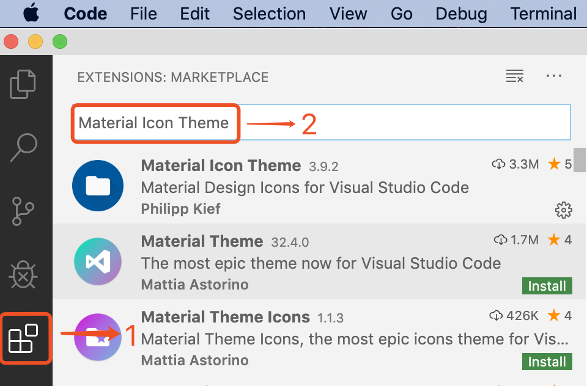
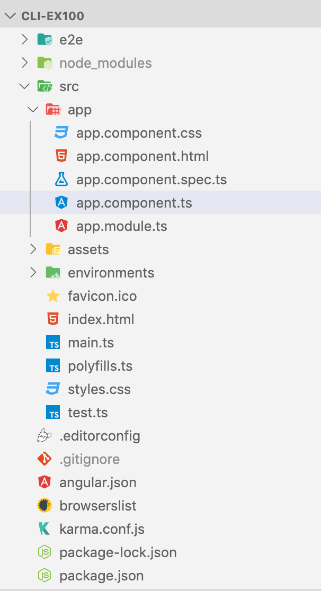
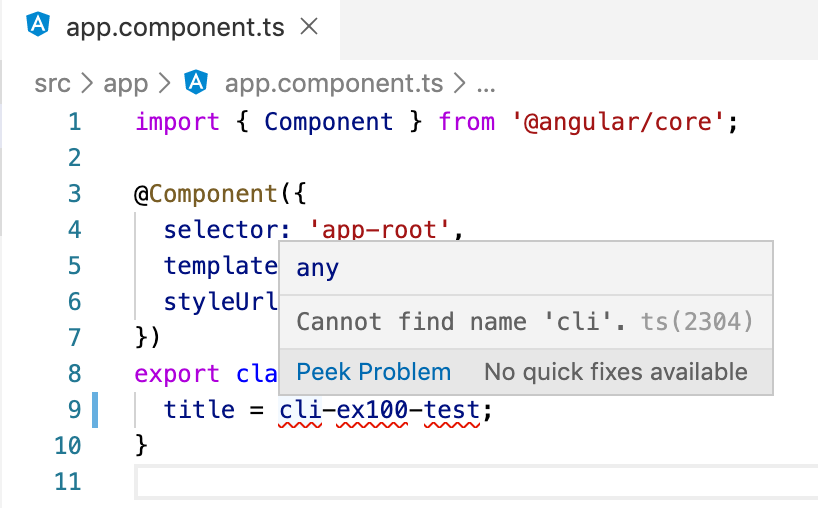

5 快速开启第一个Angular¶
使用Angular可以构建现代Web、移动端或桌面应用程序。本章带领读者如何在本地开发环境中使用Angular CLI工具来构建并运行一个简单的Angular应用。
5.1 初识Angular CLI¶
Angular CLI（Command Line Interface Tool）是一个命令行工具，用于实现自动化开发工作流程。它能用来创建项目、生成应用和组件代码，并在开发期间执行多种任务，比如测试、打包和部署。在终端中使用的ng命令就是Angular CLI命令，它能帮助开发者更好的工作。Angular CLI包含的命令有很多，读者暂时不需要为这些繁琐的命令而烦恼，因为以后可以随时查看Angular CLI的帮助信息。
目前，只要记住以下这些就够了：
它可以创建新的Angular应用程序；
它可以通过实时、重新加载及更新来运行开发服务器；
它可以添加功能到现有的Angular应用程序；
它可以运行应用程序的单元测试和端到端 (E2E) 测试；
它可以构建应用程序；
它可以打包及部署应用程序。
在详细介绍Angular CLI之前，我们先来看一下如何安装Angular CLI。
5.1.1 安装Angular CLI¶
Angular CLI依赖Node.js环境，因此必须确保系统中已经有了Node.js环境。
要安装Angular CLI，只需在终端行中运行以下命令，该命令将自行下载并安装：
npm install -g angular-cli
一般情况下，推荐全局安装Angular CLI，这样可以在任何目录下使用该命令。
5.1.2 运行Angular CLI¶
验证是否成功安装 Angular CLI，可在终端执行 ng version 命令，例如：
$ ng version _ _ ____ _ ___ / \ _ __ __ _ _ _| | __ _ _ __ / ___| | |_ _| / △ \ | '_ \ / _` | | | | |/ _` | '__| | | | | | | / ___ \| | | | (_| | |_| | | (_| | | | |___| |___ | | /_/ \_\_| |_|\__, |\__,_|_|\__,_|_| \____|_____|___| |___/ Angular CLI: 9.0.2 Node: 12.16.0 OS: darwin x64 Angular: 9.0.1 ... animations, common, compiler, compiler-cli, core, forms ... language-service, platform-browser, platform-browser-dynamic ... router Ivy Workspace: Yes Package Version ----------------------------------------------------------- @angular-devkit/architect 0.900.2 @angular-devkit/build-angular 0.900.2 @angular-devkit/build-optimizer 0.900.2 @angular-devkit/build-webpack 0.900.2 @angular-devkit/core 9.0.2 @angular-devkit/schematics 9.0.2 @angular/cli 9.0.2 @ngtools/webpack 9.0.2 @schematics/angular 9.0.2 @schematics/update 0.900.2 rxjs 6.5.4 typescript 3.7.5 webpack 4.41.2
上述命令显示Angular CLI安装成功，版本是9.0.2。
关于Google收集统计信息
当我们使用CLI命令是，有时候会出现提示下面的信息：
$ ng g d log
? Would you like to share anonymous usage data about this project with the Angular Team at
Google under Google’s Privacy Policy at https://policies.google.com/privacy? For more
details and how to change this setting, see http://angular.io/analytics. No
从Angular CLI版本8开始，Angular小组将analytics命令添加到CLI中。analytics命令用于收集系统信息（如操作系统信息、CPU内核数、内存大小和Node.js版本等信息），收集这些信息的目的是帮助Angular小组持续优化CLI功能以及调整改进的优先级。当出现上述信息时，系统会提示是否愿意共享项目信息，用户可以拒绝或跳过提示，则不会收集任何数据。也可以使用下面的命令禁止或启用analytics命令：
ng analytics off # 禁用analytics
ng analytics on # 启用用analytics
5.1.3 卸载及更新Angular CLI¶
要更新Angular CLI版本，应将其先卸载然后重新安装：
npm uninstall -g @angular/cli # 卸载Angular CLI npm install -g @angular/cli # 安装最新版本的Angular CLI
5.1.4 [示例 cli-ex100] 快速开启第一个Angular¶
打开终端窗口。
导航到合适的文件夹。例如，～/work。
输入
ng new cli-ex100命令，该命令将在名为“app”的文件夹中创建一个新的Angular应用程序，例如：
$ ng new cli-ex100 ? Would you like to add Angular routing? No ? Which stylesheet format would you like to use? CSS
执行命令时，终端窗口将显示2个问题，需要用户作出回答。第一个问题提示是否创建路由，关于什么是路由，本书后续章节将会详细介绍。这里回答 No ，表示不创建路由。接着第2个问题提示选择样式文件格式，这里直接回车，默认选择第一项 CSS ，等待命令执行完成，至此，我们创建了一个新的Angular工程。
提醒
可以在ng new命令后，附加参数 --routing=false|true 来选择是否需要添加routing，附加参数 --style=css|scss|sass|less|styl 来选择添加的样式文件的格式，
上述操作等同命令： ng new cli-ex100 --routing=false --style=css 。
进入到项目根目录下，例如：
$ cd cli-ex100/
使用
ng serve命令启动工程，例如：
$ ng serve 10% building 3/3 modules 0 activeℹ ｢wds｣: Project is running at http://localhost:4200/webpack-dev-server/ ℹ ｢wds｣: webpack output is served from / ℹ ｢wds｣: 404s will fallback to //index.html chunk {main} main.js, main.js.map (main) 47.8 kB [initial] [rendered] chunk {polyfills} polyfills.js, polyfills.js.map (polyfills) 268 kB [initial] [rendered] chunk {runtime} runtime.js, runtime.js.map (runtime) 6.15 kB [entry] [rendered] chunk {styles} styles.js, styles.js.map (styles) 9.72 kB [initial] [rendered] chunk {vendor} vendor.js, vendor.js.map (vendor) 3.81 MB [initial] [rendered] Date: 2020-01-31T10:23:02.399Z - Hash: 5ae110266d5037ce487f - Time: 11397ms ** Angular Live Development Server is listening on localhost:4200, open your browser on http://localhost:4200/ ** ℹ ｢wdm｣: Compiled successfully.
打开Web浏览器并浏览到 “http://localhost:4200”。 应该看到文本“cli-ex100 app is running!”，如图5-1所示，这意味着应用程序正在运行。
{kind=link}
图5-1 快速开启的第一个Angular应用程序
5.2 准备Angular的开发环境¶
Angular工程其实就是Node.js工程，因此，之前准备的Node.js开发环境同样适用于Angular的开发环境。
5.2.1 如何扩展IDE的功能¶
俗话说，工欲善其事，必先利其器，一个好的开发环境确实能为开发工作增色不少。VSCode编辑器的功能可以通过插件进行扩展。这些插件包含JSON格式化工具、代码分析工具、文本编辑工具及语法高亮等等，这里我们通过安装一个Icon插件工具，带领大家熟悉插件的安装过程，其他插件的安装过程与此类似。
“Material Icon Theme”插件会基于文件类型，在显示文件名旁添加一个类型图标，让用户更容易的识别文件。它是专门为VSCode编辑器设计的文件图标主题，安装它之后，VSCode编辑器里工程的目录和文件图标变得漂亮多了，给用户带来了全新的视觉效果，安装步骤如图5-2所示：
{kind=link}
图5-2 安装Material Icon Theme文件图标主题
打开VSCode编辑器，先切换到左侧的EXTENSIONS面板，然后在搜索框中输入“Material Icon Theme”，面板下面将自动从VSCode的软件市场中搜索该主题并显示在下方列表中；
选择Material Icon Theme主题，点击右下方的Install安装按钮，等待安装完成；
安装完成后，重启VSCode编辑器。导入的Angular工程文件的图标显示的效果如下：
{kind=link}
图5-3 Material Icon Theme文件图标主题效果
VSCode编辑器的插件是可选的，用户可以选择安装自己需要的插件。卸载插件也很方便，同样的，在编辑器的EXTENSIONS面板中找到已经安装好的插件，点击Uninstall按钮即可。
5.2.2 [示例 cli-ex200] 在运行时编辑工程¶
让我们尝试在运行时编辑工程，看看会发生什么。
在VSCode编辑器的TERMINAL窗口，输入
ng serve命令启动应用程序。编辑组件。双击打开 src/app/app.component.ts 文件，找到下面语句：
title = 'cli-ex100';
将上面的文本内容修改为：“cli-ex100-test”，并保存（快捷键：Ctrl+s）；
观察TERMINAL窗口，发现应用程序代码自动编译并部署；
查看应用程序结果。打开Web浏览器并浏览到 “http://localhost:4200”。 应该看到之前的文本已经变更成“cli-ex100-test app is running!”，如图5-4所示，这意味着应用程序已经成功修改了。
{kind=link}
VSCode编辑器可以创建多个并定位到不同位置的终端(TERMINAL)，并在它们之间轻松导航。意味着这些终端窗口可以同时运行多条命令。可以通过单击TERMINAL面板右上角的加号（+）图标或快捷键“Ctrl + Shift +`”命令来添加终端实例。
参考
TERMINAL多终端的设计对开发Angular应用程序非常适用，如在开发Angular应用程序期间，可以在其中一个终端执行 ng serve 命令启动应用程序并保持服务处于运行状态，在另一个终端执行其他的Angular CLI命令。
5.2.3 编译时的错误提醒¶
这次尝试故意让程序代码编译报错，看看会发生什么：
继续编辑组件。还是刚编辑的那行代码，去掉单引号，使其变为：
title = cli-ex100-test;，然后保存文件；观察刚编辑的代码，此行语句的下方已经出现了提示错误信息（错误代码处下方出现红色的波浪线，鼠标移动到代码处，会出现提示错误信息窗口），如图5-5所示：
图5-5 VSCode编辑器中代码编译时错误
{kind=link}
观察TERMINAL窗口，也同样发现代码自动编译且报错了；
观察Web浏览器窗口，页面已经变成了空白页，如果鼠标右键打开浏览器的开发者模式，发现里面的Console控制台同样也有错误信息产生；
加上单引号，还原并保存代码，发现上述的3处错误信息都会自动消失，应用程序恢复到图5-4时的状态。
5.2.4 运行时的错误提醒¶
在项目中引入运行时错误，看看会发生什么：
编辑模板文件。双击打开 src/app/app.component.html 文件，找到下面语句：
<span>{{ title }} app is running!</span>
将上面代码中的变量名“title”修改为“title123”，代码如下：
<span>{{ title123 }} app is running!</span>
观察TERMINAL窗口，发现代码自动编译，注意这里并没有错误产生；
观察浏览器的开发者模式，发现里面的Console控制台同样也有错误信息产生；
观察Web浏览器窗口，页面依然正常加载，但是注意页面中的文本内容中少了部分信息，title变量的值变为了空，如图5-6所示：
{kind=link}
通过示例cli-ex200的演示，我们得出如下结论：
Angular CLI的
ng serve命令会监视已更改的文件，自动编译和重新加载应用程序。Angular应用程序针对不同的错误，处理的策略不同，如：编译错误导致整个页面加载失败，而运行时错误不影响页面的加载。
借助集成开发环境开发Angular应用程序，能更大的方便用户，如：实时提供代码编译错误信息。
5.3 Angular CLI常用命令及选项¶
Angular CLI是一个命令行工具，它能用来创建项目、生成模块、组件、服务和指令等代码，还能在开发期间执行各种各样的任务。 下面我们详细的介绍一些常用的Angular CLI命令的使用方法。
5.3.1 初始化命令及选项介绍¶
Angular CLI的命令 ng new 负责创建并初始化一个新的Angular应用程序。该命令提供交互式提示，以提供可选配置，也可以通过添加选项参数来默认选择配置。
初始化命令格式如： ng new <name> [options] ，可以简写为： ng n <name> [options] 。参数<name>是新建项目的名称， [options]选项除了在[示例 cli-ex200]中介绍了两个参数选项外，下面的一些选项也是经常使用到的：
--inlineTemplate=true|false是否使用内联模板生成组件。组件模板标记将在组件内生成，而不是在单独的文件中生成；--inlineStyle=true|false是否生成具有内联样式的组件。组件样式将在组件内生成，而不是在单独的文件中生成；--skipTests=true|false如果为true，则不会为新项目生成“spec.ts”测试文件；--minimal=true|false如果为true，则相当于--inlineTemplate=true --inlineStyle=true --skipTests=true以及不含e2e测试文件；--interactive=true|false如果为false，则禁用交互式输入提示，相当于：--routing=false --style=css；--defaults=true|false如果为true，同--interactive=true。
上述命令的值默认均为false，部分命令可以简写，如：
--inlineTemplate=true可以简写成--inline-template或-t(小写字母t)；--inlineStyle=true可以简写成--inline-style或-s(小写字母s)；--skipTests=true可以简写成-S(大写字母S) 。
比如常用命令 ng n appName -s -t --interactive=false 的含义是：使用无交互模式，直接创建名为appName的工程，该工程组件默认使用内联模板和内联样式，且无路由和默认使用CSS作为样式文件。
5.3.2 创建命令及选项介绍¶
创建命令的格式如：ng generate <type> [options]，可以简写为：ng g <type> [options]。
创建命令根据<type>的种类生成或创建相应的文件。命令行中<type>支持的种类有很多，这里简单的介绍几种，见表5-1所示。
支持的种类 |
示例 |
说明 |
|---|---|---|
Component |
ng g component new-component |
创建组件 |
Directive |
ng g directive new-directive |
创建指令 |
Pipe |
ng g pipe new-pipe |
创建管道 |
Service |
ng g service new-service |
创建服务类 |
Class |
ng g class new-class |
创建类 |
Interface |
ng g pipe new-pipe |
创建接口 |
Enum |
ng g enum new-enum |
创建枚举类 |
Module |
ng g module new-module |
创建模块 |
命令行中的<options>所支持的选项随着<type>的种类不同而不同，换句话说，不同的<type>有不同的<options>与之相对应。如：component所对应的选项有:
--inlineStyle=true|false默认值为false。为true时，生成具有内联样式的组件。组件样式将在组件内生成，而不是在单独的文件中生成。--inlineTemplate=true|false默认值为false。为true时，使用内联模板生成组件。组件模板标记将在组件内生成，而不是在单独的文件中生成。--skipTests=true|false默认值为false。为true时，不为新组件创建“spec.ts”测试文件。--flat=true|false默认值为false。为true时，则在当前项目的根目录下创建新文件。
关于这些选项的使用方法，本书后续章节的示例中将会大量的涉及到。另，读者也可以通过官方API（https://angular.io/cli）查询更多的细节。
Angular CLI还有其他的一些命令，本书后续章节会陆续的进行介绍。
5.4 Angular项目结构概述¶
在示例cli-ex200，我们已经修改了项目中的一个文件，除了这个文件外，项目中还有大量的其他文件，下面开始介绍下Angular工程的项目结构。
目录 |
文件 |
说明 |
|---|---|---|
根目录 |
e2e |
端到端的自动化集成测试目录 |
node_modules |
第三方依赖包存放目录 |
|
src |
应用程序源代码目录 |
|
.editorconfig |
统一编译器中的代码风格 |
|
.gitignore |
git中的忽略文件列表 |
|
angular.json |
Angular的配置文件 |
|
browserslist |
配置浏览器兼容性的文件 |
|
karma.conf.js |
自动化测试框架Karma的配置文件 |
|
package-lock.json |
依赖包版本锁定文件 |
|
package.json |
标准的npm工具的配置文件，这个文件的内容包含：
1. 该应用程序所使用的第三方依赖包信息
2. 跟工程相关的执行命令
|
|
README.md |
项目说明的MakeDown文件 |
|
tsconfig.app.json |
当前项目的TypeScript编译器的配置文件 |
|
tsconfig.json |
整个工作区的TypeScript配置文件 |
|
tsconfig.spec.json |
用于测试的TypeScript配置文件 |
|
tslint.json |
是tslint的配置文件，用来定义TypeScript代码质量检查的规则 |
|
src目录 |
app |
工程源码目录 |
assets |
资源目录，存储静态资源的，比如图片 |
|
environments |
环境配置目录 |
|
favicon.ico |
header里的icon，浏览器的图标文件 |
|
index.html |
当前应用程序的根HTML文件，程序启动就是访问这个页面 |
|
main.ts |
整个项目的入口ts文件，Angular通过这个文件来启动项目 |
|
polyfills.ts |
不同浏览器兼容脚本加载，主要是用来导入一些必要库，
为了让Angular能兼容老版本的浏览器
|
|
style.css |
整个项目的全局css |
|
test.ts |
测试入口 |
|
app目录 |
app-routing.module.ts |
app模块的路由配置文件 |
app.component.css |
app组件的样式 |
|
app.component.html |
app组件的模板 |
|
app.component.spec.ts |
app组件的测试类文件 |
|
app.component.ts |
app的组件类文件 |
|
app.module.ts |
app的模块类文件 |
|
environments目录 |
environments.prod.ts |
生产环境配置 |
environments.ts |
开发环境配置 |
5.5 如何启动Angular应用程序¶
Node.js项目的package.json文件是配置和描述如何与程序交互和运行的中心，是标准的npm工具的配置文件，这个文件的内容包含：
应用程序所使用的第三方依赖包信息
跟工程相关的执行命令，npm通过这些命令启动项目、运行脚本、安装依赖项、发布到npm注册表以及执行其它的任务。
Node.js项目相关的执行命令都可以在这个package.json文件中找到相应的信息，所有的命令集中记录在文件中的scripts节点处，在项目中用户可以通过组合这些命令重用脚本：
"scripts": { "ng": "ng", "start": "ng serve", "build": "ng build", "test": "ng test", "lint": "ng lint", "e2e": "ng e2e" },
scripts节点中键（key）对应运行npm命令行的缩写，比如start键对应的是执行 npm run start 命令行，冒号（:）右边的内容是执行的具体脚本命令。比如执行 npm run start 命令对应的就是执行 ng serve 命令。
Angular项目本身也是Node.js项目，它通过scripts节点将npm命令与Angular CLI命令对应起来，即左边对应的是npm命令，右边对应的是Angular CLI命令。
因此，在上面的示例中执行的 ng serve 命令也可以替换为 npm run start 命令。
提示
在npm中，仅有4个命令可以省略关键字 run ，这4个命令分别是： npm test ，npm start ，npm restart 和 npm stop 命令。
5.6 Angular的启动过程有哪些步骤¶
在Angular应用程序启动时，会发生以下情况：
当在终端执行
ng serve时，Angular CLI会根据 angular.json文件中的main元素找到应用程序的入口文件main.ts；main.ts文件加载AppModule根模块（app.module.ts文件）；
AppModule根模块引导AppComponent根组件（app.component.ts文件）；
AppComponent根组件完成自身的初始化工作，如：完成标签<app-root>的初始化工作。
在上述工作完成后，当打开WEB浏览器并浏览到“http://localhost:4200”时，会发生以下情况：
在默认情况下，WEB浏览器会打开文件index.html；
index.html文件中加载<app-root>标签，显示应用程序内容。
5.7 小结¶
本章带领读者初识Angular CLI的内容，接着快速开启第一个Angular应用程序，然后准备了Angular的开发环境，最后对工程结构和Angular的启动过程做了简单的介绍。